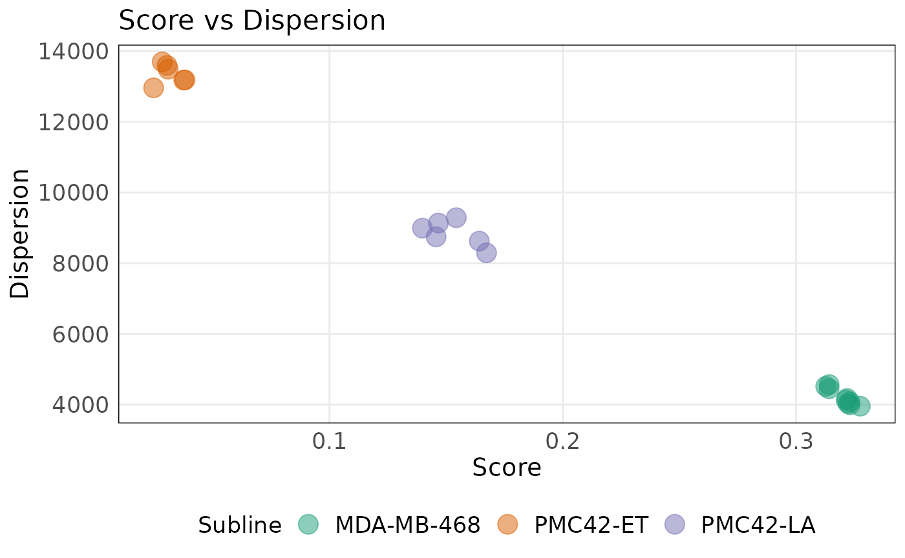
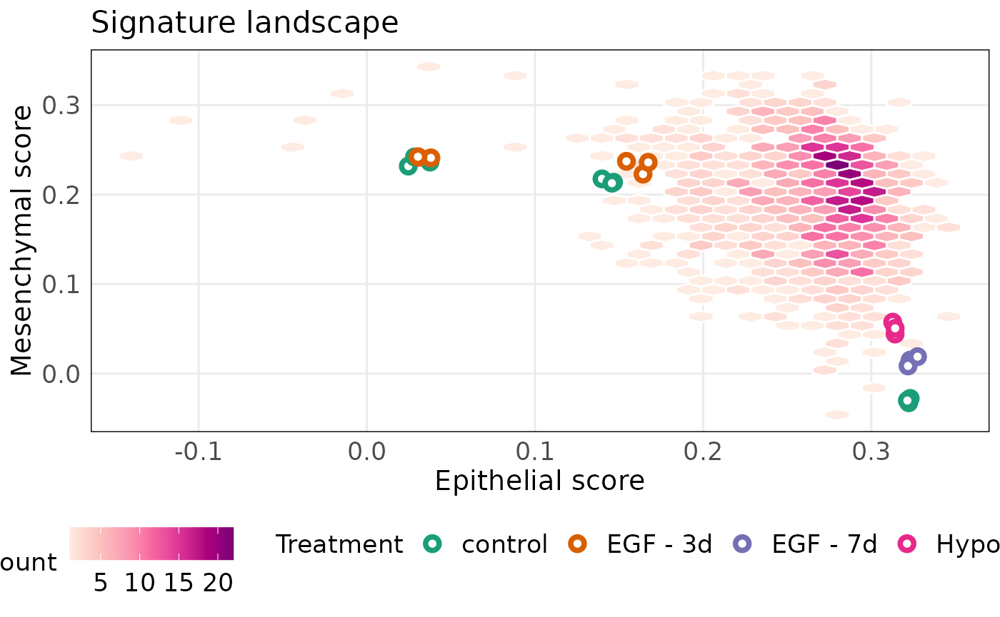
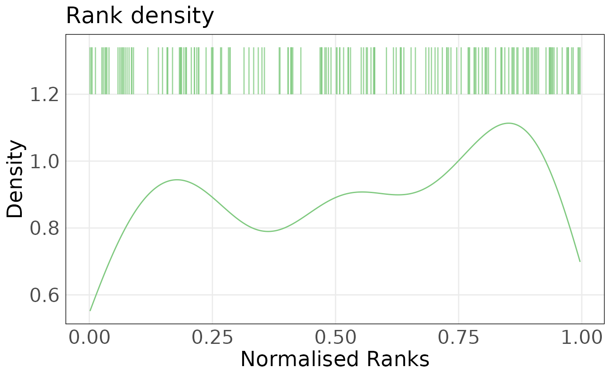
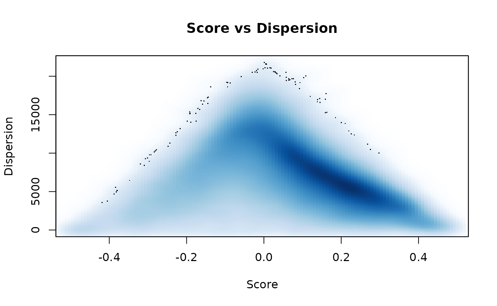

Visualising molecular phenotypes inferred from individual samples using singscore, vissE and msigdb
Dharmesh D Bhuva
Bioinformatics Division, Walter and Eliza Hall Institute of Medical Research, Parkville, VIC 3052, AustraliaDepartment of Medical Biology, University of Melbourne, Parkville, VIC 3010, Australiabhuva.d@wehi.edu.au
Chin Wee Tan
Bioinformatics Division, Walter and Eliza Hall Institute of Medical Research, Parkville, VIC 3052, AustraliaDepartment of Medical Biology, University of Melbourne, Parkville, VIC 3010, Australiacwtan@wehi.edu.au
Melissa J Davis
Bioinformatics Division, Walter and Eliza Hall Institute of Medical Research, Parkville, VIC 3052, AustraliaDepartment of Medical Biology, University of Melbourne, Parkville, VIC 3010, AustraliaDepartment of Biochemistry and Molecular Biology, Faculty of Medicine, Dentistry and Health Sciences, University of Melbourne, Parkville, VIC, 3010, Australiadavis.m@wehi.edu.au
Aug 2021
Source:vignettes/workflow_singscore_vissE.Rmd
workflow_singscore_vissE.RmdAbstract
Abstract
R version: R version 4.1.0 (2021-05-18)
Bioconductor version: 3.14
Package version: 0.9.1
Molecular phenotyping of individual samples
Load data
library(ExperimentHub)
eh = ExperimentHub()
query(eh, 'emtdata')## ExperimentHub with 3 records
## # snapshotDate(): 2021-08-09
## # $dataprovider: Walter and Eliza Hall Institute of Medical Research, Queens...
## # $species: Homo sapiens
## # $rdataclass: GSEABase::SummarizedExperiment
## # additional mcols(): taxonomyid, genome, description,
## # coordinate_1_based, maintainer, rdatadateadded, preparerclass, tags,
## # rdatapath, sourceurl, sourcetype
## # retrieve records with, e.g., 'object[["EH5439"]]'
##
## title
## EH5439 | foroutan2017_se
## EH5440 | cursons2018_se
## EH5441 | cursons2015_se
library(SummarizedExperiment)
library(emtdata)
#load using object ID
emt_se = eh[['EH5441']]
#alternatively
emt_se = cursons2015_se()
emt_se## class: SummarizedExperiment
## dim: 29866 21
## metadata(0):
## assays(2): counts logRPKM
## rownames(29866): ENSG00000223972 ENSG00000227232 ... ENSG00000271254
## ENSG00000275405
## rowData names(7): Chr Start ... gene_name gene_biotype
## colnames(21): MDA468_Ctrl_Rep1 MDA468_Ctrl_Rep2 ... PMC42LA_EGF_Rep2
## PMC42LA_EGF_Rep3
## colData names(14): group lib.size ... Organism SRA.StudyConvert Ensembl IDs to Symbols
#identify duplicated mappings
all_genes = rowData(emt_se)$gene_name
dups = unique(all_genes[duplicated(all_genes)])
dups## [1] "Y_RNA" "RGS5" "TBCE" "LINC00486" "Metazoa_SRP"
## [6] "LINC01238" "CYB561D2" "POLR2J4" "POLR2J3" "5S_rRNA"
## [11] "TMSB15B" "ALG1L9P" "DNAJC9-AS1" "BMS1P4" "SNORA70"
## [16] "HERC2P7" "U2" "U3" "ELFN2" "5_8S_rRNA"
## [21] "U1"
#remove duplicated genes
emt_se = emt_se[!all_genes %in% dups, ]
rownames(emt_se) = rowData(emt_se)$gene_name
emt_se## class: SummarizedExperiment
## dim: 29752 21
## metadata(0):
## assays(2): counts logRPKM
## rownames(29752): DDX11L1 WASH7P ... AC004556.3 AC240274.1
## rowData names(7): Chr Start ... gene_name gene_biotype
## colnames(21): MDA468_Ctrl_Rep1 MDA468_Ctrl_Rep2 ... PMC42LA_EGF_Rep2
## PMC42LA_EGF_Rep3
## colData names(14): group lib.size ... Organism SRA.Study
#create a DGEList object
emt_dge = asDGEList(emt_se)
# emt_dgeLoad gene-sets
#read Thiery et al. signatures
thiery_path = system.file('extdata/Thiery_EMTsignatures.txt', package = 'GenesetAnalysisWorkflow')
thiery_data = read.table(thiery_path, header = TRUE)
head(thiery_data)## officialSymbol genes epiMes_tumor epiMes_cellLine Ensembl.Gene.ID
## 1 ABCC3 ABCC3 epi epi ENSG00000108846
## 2 ABHD11 ABHD11 epi <NA> ENSG00000106077
## 3 ADAP1 ADAP1 <NA> epi ENSG00000105963
## 4 ADIRF C10orf116 <NA> epi ENSG00000148671
## 5 AGR2 AGR2 epi epi ENSG00000106541
## 6 AIM1 AIM1 <NA> epi ENSG00000112297
## HGNC.symbol EntrezGene.ID
## 1 ABCC3 8714
## 2 ABHD11 83451
## 3 ADAP1 11033
## 4 ADIRF 10974
## 5 AGR2 10551
## 6 AIM1 202
library(GSEABase)
#create epithelial gene-set
epi_genes = thiery_data$officialSymbol[thiery_data$epiMes_cellLine %in% 'epi']
#select unique genes
epi_genes = unique(epi_genes)
epi_sig = GeneSet(epi_genes, setName = 'THIERY_EPITHELIAL_CELLLINE', geneIdType = SymbolIdentifier())
epi_sig## setName: THIERY_EPITHELIAL_CELLLINE
## geneIds: ABCC3, ADAP1, ..., ZNF165 (total: 170)
## geneIdType: Symbol
## collectionType: Null
## details: use 'details(object)'
#create mesenchymal gene-set
mes_genes = thiery_data$genes[thiery_data$epiMes_cellLine %in% 'mes']
mes_genes = unique(mes_genes)
mes_sig = GeneSet(mes_genes, setName = 'THIERY_MESENCHYMAL_CELLLINE', geneIdType = SymbolIdentifier())
mes_sig## setName: THIERY_MESENCHYMAL_CELLLINE
## geneIds: AKAP12, ANK2, ..., ZEB1 (total: 48)
## geneIdType: Symbol
## collectionType: Null
## details: use 'details(object)'need to add KEGG separately due to licensing.
library(msigdb)
#load MSigDB gene-sets
msigdb.hs = getMsigdb(org = 'hs', id = 'SYM', version = '7.2')
#add KEGG gene-sets
msigdb.hs = appendKEGG(msigdb.hs)
msigdb.hs## GeneSetCollection
## names: chr11q, chr6q, ..., KEGG_VIRAL_MYOCARDITIS (31508 total)
## unique identifiers: AP001767.2, SLC22A9, ..., AC023491.2 (40044 total)
## types in collection:
## geneIdType: SymbolIdentifier (1 total)
## collectionType: BroadCollection (1 total)Singscore
library(singscore)
#rank genes based on expression
eranks = rankGenes(assay(emt_se, 'logRPKM'))
#compute epithelial scores
epi_score = simpleScore(eranks, epi_sig)
head(epi_score)## TotalScore TotalDispersion
## MDA468_Ctrl_Rep1 0.3230845 3992.642
## MDA468_Ctrl_Rep2 0.3222157 4030.448
## MDA468_Ctrl_Rep3 0.3214232 4120.145
## MDA468_EGF_Rep1 0.3230362 4076.409
## MDA468_EGF_Rep2 0.3218094 4169.812
## MDA468_EGF_Rep3 0.3274617 3951.870
#compute mesenchymal scores
mes_score = simpleScore(eranks, mes_sig)
head(mes_score)## TotalScore TotalDispersion
## MDA468_Ctrl_Rep1 -0.027817504 10014.963
## MDA468_Ctrl_Rep2 -0.032615987 10333.722
## MDA468_Ctrl_Rep3 -0.030163516 10885.249
## MDA468_EGF_Rep1 0.014965710 10068.337
## MDA468_EGF_Rep2 0.008487366 10682.133
## MDA468_EGF_Rep3 0.018875730 8914.874Plot individual epithelial scores
plotDispersion(
epi_score,
annot = emt_se$Subline,
annot_name = 'Subline',
size = 5,
alpha = 0.5,
isInteractive = FALSE
)
Plot individual mesenchymal scores using an interactive plot
plotDispersion(
mes_score,
annot = emt_se$Subline,
annot_name = 'Subline',
size = 5,
alpha = 0.5,
isInteractive = FALSE
)
#load pre-computed TCGA breast cancer EMT scores
data("scoredf_tcga_epi")
data("scoredf_tcga_mes")
#plot an EMT landscape
p_tcga = plotScoreLandscape(
scoredf1 = scoredf_tcga_epi,
scoredf2 = scoredf_tcga_mes,
scorenames = c('Epithelial score', 'Mesenchymal score')
)
projectScoreLandscape(
p_tcga,
scoredf1 = epi_score,
scoredf2 = mes_score,
annot = emt_se$Subline,
annot_name = 'Subline',
isInteractive = FALSE
)
projectScoreLandscape(
p_tcga,
scoredf1 = epi_score,
scoredf2 = mes_score,
annot = emt_se$Treatment,
annot_name = 'Treatment',
isInteractive = FALSE
)
Score using the Hallmark EMT signature
hemt_sig = msigdb.hs[['HALLMARK_EPITHELIAL_MESENCHYMAL_TRANSITION']]
hemt_score = simpleScore(eranks, hemt_sig)
#plot Hallmark EMT signature
projectScoreLandscape(
p_tcga,
scoredf1 = epi_score,
scoredf2 = mes_score,
annot = hemt_score$TotalScore,
annot_name = 'Hallmark EMT score',
isInteractive = FALSE
)
We can see that ET vs LA is a strong difference. We can investigate individual samples.
plotRankDensity(eranks[, 'PMC42LA_Ctrl_Rep1', drop = FALSE], epi_sig, isInteractive = FALSE)
plotRankDensity(eranks[, 'PMC42ET_Ctrl_Rep1', drop = FALSE], epi_sig, isInteractive = FALSE)
Stingscore
#simulate data by sub-sampling
sample_genes = union(geneIds(epi_sig), geneIds(mes_sig))
sample_genes = union(sample_genes, getStableGenes(5))
#subset genes with measurements in the data
sample_genes = intersect(sample_genes, rownames(emt_se))
#subset data
targeted_se = emt_se[sample_genes, ]
targeted_se## class: SummarizedExperiment
## dim: 214 21
## metadata(0):
## assays(2): counts logRPKM
## rownames(214): ABCC3 ADAP1 ... TARDBP HNRNPK
## rowData names(7): Chr Start ... gene_name gene_biotype
## colnames(21): MDA468_Ctrl_Rep1 MDA468_Ctrl_Rep2 ... PMC42LA_EGF_Rep2
## PMC42LA_EGF_Rep3
## colData names(14): group lib.size ... Organism SRA.Study
st_genes = getStableGenes(5)
st_genes## [1] "RBM45" "BRAP" "CIAO1" "TARDBP" "HNRNPK"
#rank genes using stably expressed genes
st_eranks = rankGenes(targeted_se, stableGenes = st_genes)
#score samples using the simulated targeted sequencing data
epi_score_st = simpleScore(st_eranks, epi_sig)
mes_score_st = simpleScore(st_eranks, mes_sig)
#plot scores computed using singscore vs stingscore
colmap = c('MDA-MB-468' = '#1B9E77', 'PMC42-ET' = '#D95F02', 'PMC42-LA' = '#7570B3')
par(mfrow = c(1, 2))
plot(
epi_score$TotalScore,
epi_score_st$TotalScore,
col = colmap[targeted_se$Subline],
main = 'Epithelial score',
xlab = 'Singscore',
ylab = 'Stingscore (targeted)'
)
abline(coef = c(0, 1), col = 2, lty = 2)
plot(
mes_score$TotalScore,
mes_score_st$TotalScore,
col = colmap[targeted_se$Subline],
main = 'Mesenchymal score',
xlab = 'Singscore',
ylab = 'Stingscore (targeted)'
)
abline(coef = c(0, 1), col = 2, lty = 2)
Multiscore
#subset collections and subcollections of interest
genesigs = c(
epi_sig,
mes_sig,
subsetCollection(msigdb.hs, 'h'),
subsetCollection(msigdb.hs, 'c2', c('CP:KEGG', 'CP:REACTOME', 'CP:BIOCARTA')),
subsetCollection(msigdb.hs, 'c5', c('GO:BP', 'GO:MF', 'GO:CC'))
)
genesigs = GeneSetCollection(genesigs)
eranks = rankGenes(assay(emt_se, 'logRPKM'))
msigdb_scores = multiScore(eranks, genesigs)
lapply(msigdb_scores, function(x) x[1:5, 1:2])## $Scores
## MDA468_Ctrl_Rep1 MDA468_Ctrl_Rep2
## THIERY_EPITHELIAL_CELLLINE 0.3230845 0.32221565
## THIERY_MESENCHYMAL_CELLLINE -0.0278175 -0.03261599
## HALLMARK_TNFA_SIGNALING_VIA_NFKB 0.1893111 0.18454327
## HALLMARK_HYPOXIA 0.1549132 0.15766930
## HALLMARK_CHOLESTEROL_HOMEOSTASIS 0.3035149 0.30298773
##
## $Dispersions
## MDA468_Ctrl_Rep1 MDA468_Ctrl_Rep2
## THIERY_EPITHELIAL_CELLLINE 3992.642 4030.448
## THIERY_MESENCHYMAL_CELLLINE 10014.963 10333.722
## HALLMARK_TNFA_SIGNALING_VIA_NFKB 7278.825 7191.351
## HALLMARK_HYPOXIA 7614.634 7633.907
## HALLMARK_CHOLESTEROL_HOMEOSTASIS 4222.445 4188.345
smoothScatter(msigdb_scores$Scores, msigdb_scores$Dispersions, xlab = 'Score', ylab = 'Dispersion', main = 'Score vs Dispersion')
#select scores for a single Hypoxic sample
et_la_scores = msigdb_scores$Scores[, 'PMC42ET_Ctrl_Rep1'] - msigdb_scores$Scores[, 'PMC42LA_Ctrl_Rep1']
et_la_scores = sort(et_la_scores)
head(et_la_scores)## GO_REGULATION_OF_EPINEPHRINE_SECRETION
## -0.3560168
## GO_POSITIVE_REGULATION_OF_MESODERM_FORMATION
## -0.3180387
## GO_REGULATION_OF_VERY_LOW_DENSITY_LIPOPROTEIN_PARTICLE_REMODELING
## -0.3061849
## GO_GAP_JUNCTION_CHANNEL_ACTIVITY_INVOLVED_IN_CELL_COMMUNICATION_BY_ELECTRICAL_COUPLING
## -0.3041113
## GO_INTERMEDIATE_DENSITY_LIPOPROTEIN_PARTICLE
## -0.2954161
## GO_NORADRENERGIC_NEURON_DIFFERENTIATION
## -0.2788329
tail(et_la_scores)## BIOCARTA_CYTOKINE_PATHWAY
## 0.2212715
## GO_POSITIVE_REGULATION_OF_T_CELL_TOLERANCE_INDUCTION
## 0.2223007
## GO_CORTICOTROPIN_RELEASING_HORMONE_RECEPTOR_BINDING
## 0.2240487
## GO_REGULATION_OF_LIPID_TRANSPORTER_ACTIVITY
## 0.2332605
## GO_11_CIS_RETINAL_BINDING
## 0.2378071
## GO_ESTROGEN_2_HYDROXYLASE_ACTIVITY
## 0.2410252Packages used
This workflow depends on various packages from version 3.14 of the Bioconductor project, running on R version 4.1.0 (2021-05-18) or higher. The complete list of the packages used for this workflow are shown below:
## R version 4.1.0 (2021-05-18)
## Platform: x86_64-pc-linux-gnu (64-bit)
## Running under: Ubuntu 20.04.2 LTS
##
## Matrix products: default
## BLAS/LAPACK: /usr/lib/x86_64-linux-gnu/openblas-pthread/libopenblasp-r0.3.8.so
##
## locale:
## [1] LC_CTYPE=en_US.UTF-8 LC_NUMERIC=C
## [3] LC_TIME=en_US.UTF-8 LC_COLLATE=en_US.UTF-8
## [5] LC_MONETARY=en_US.UTF-8 LC_MESSAGES=C
## [7] LC_PAPER=en_US.UTF-8 LC_NAME=C
## [9] LC_ADDRESS=C LC_TELEPHONE=C
## [11] LC_MEASUREMENT=en_US.UTF-8 LC_IDENTIFICATION=C
##
## attached base packages:
## [1] stats4 stats graphics grDevices utils datasets methods
## [8] base
##
## other attached packages:
## [1] ggpubr_0.4.0 vissE_1.1.0
## [3] msigdb_1.1.0 singscore_1.13.1
## [5] emtdata_1.1.0 GSEABase_1.55.1
## [7] graph_1.71.2 annotate_1.71.0
## [9] XML_3.99-0.7 AnnotationDbi_1.55.1
## [11] edgeR_3.35.0 limma_3.49.4
## [13] ExperimentHub_2.1.4 AnnotationHub_3.1.5
## [15] BiocFileCache_2.1.1 dbplyr_2.1.1
## [17] SummarizedExperiment_1.23.1 Biobase_2.53.0
## [19] GenomicRanges_1.45.0 GenomeInfoDb_1.29.3
## [21] IRanges_2.27.0 S4Vectors_0.31.0
## [23] BiocGenerics_0.39.1 MatrixGenerics_1.5.3
## [25] matrixStats_0.60.0 ggplot2_3.3.5
## [27] GenesetAnalysisWorkflow_0.9.1
##
## loaded via a namespace (and not attached):
## [1] colorspace_2.0-2 ggsignif_0.6.2
## [3] rio_0.5.27 ellipsis_0.3.2
## [5] rprojroot_2.0.2 XVector_0.33.0
## [7] fs_1.5.0 hexbin_1.28.2
## [9] farver_2.1.0 ggrepel_0.9.1
## [11] bit64_4.0.5 interactiveDisplayBase_1.31.2
## [13] fansi_0.5.0 cachem_1.0.5
## [15] knitr_1.33 jsonlite_1.7.2
## [17] broom_0.7.9 png_0.1-7
## [19] shiny_1.6.0 BiocManager_1.30.16
## [21] compiler_4.1.0 httr_1.4.2
## [23] backports_1.2.1 assertthat_0.2.1
## [25] Matrix_1.3-4 fastmap_1.1.0
## [27] later_1.2.0 htmltools_0.5.1.1
## [29] tools_4.1.0 igraph_1.2.6
## [31] gtable_0.3.0 glue_1.4.2
## [33] GenomeInfoDbData_1.2.6 reshape2_1.4.4
## [35] dplyr_1.0.7 rappdirs_0.3.3
## [37] Rcpp_1.0.7 carData_3.0-4
## [39] cellranger_1.1.0 jquerylib_0.1.4
## [41] pkgdown_1.6.1 vctrs_0.3.8
## [43] Biostrings_2.61.2 xfun_0.25
## [45] stringr_1.4.0 openxlsx_4.2.4
## [47] mime_0.11 lifecycle_1.0.0
## [49] rstatix_0.7.0 org.Hs.eg.db_3.13.0
## [51] zlibbioc_1.39.0 scales_1.1.1
## [53] hms_1.1.0 ragg_1.1.3
## [55] promises_1.2.0.1 RColorBrewer_1.1-2
## [57] yaml_2.2.1 curl_4.3.2
## [59] memoise_2.0.0 sass_0.4.0
## [61] stringi_1.7.3 RSQLite_2.2.7
## [63] highr_0.9 BiocVersion_3.14.0
## [65] desc_1.3.0 filelock_1.0.2
## [67] zip_2.2.0 rlang_0.4.11
## [69] pkgconfig_2.0.3 systemfonts_1.0.2
## [71] bitops_1.0-7 evaluate_0.14
## [73] lattice_0.20-44 purrr_0.3.4
## [75] labeling_0.4.2 bit_4.0.4
## [77] tidyselect_1.1.1 plyr_1.8.6
## [79] magrittr_2.0.1 R6_2.5.0
## [81] generics_0.1.0 DelayedArray_0.19.1
## [83] DBI_1.1.1 haven_2.4.3
## [85] foreign_0.8-81 pillar_1.6.2
## [87] withr_2.4.2 prettydoc_0.4.1
## [89] abind_1.4-5 KEGGREST_1.33.0
## [91] RCurl_1.98-1.4 tibble_3.1.3
## [93] crayon_1.4.1 car_3.0-11
## [95] KernSmooth_2.23-20 utf8_1.2.2
## [97] rmarkdown_2.10 readxl_1.3.1
## [99] locfit_1.5-9.4 grid_4.1.0
## [101] data.table_1.14.0 blob_1.2.2
## [103] forcats_0.5.1 digest_0.6.27
## [105] xtable_1.8-4 tidyr_1.1.3
## [107] httpuv_1.6.1 textshaping_0.3.5
## [109] munsell_0.5.0 viridisLite_0.4.0
## [111] bslib_0.2.5.1References
Allaire, JJ, Yihui Xie, Jonathan McPherson, Javier Luraschi, Kevin Ushey, Aron Atkins, Hadley Wickham, Joe Cheng, Winston Chang, and Richard Iannone. 2021. Rmarkdown: Dynamic Documents for r. https://CRAN.R-project.org/package=rmarkdown.
Qiu, Yixuan. 2021. Prettydoc: Creating Pretty Documents from r Markdown. https://github.com/yixuan/prettydoc.
Wickham, Hadley, Winston Chang, Lionel Henry, Thomas Lin Pedersen, Kohske Takahashi, Claus Wilke, Kara Woo, Hiroaki Yutani, and Dewey Dunnington. 2021. Ggplot2: Create Elegant Data Visualisations Using the Grammar of Graphics. https://CRAN.R-project.org/package=ggplot2.
Xie, Yihui. 2021. Knitr: A General-Purpose Package for Dynamic Report Generation in r. https://yihui.org/knitr/.